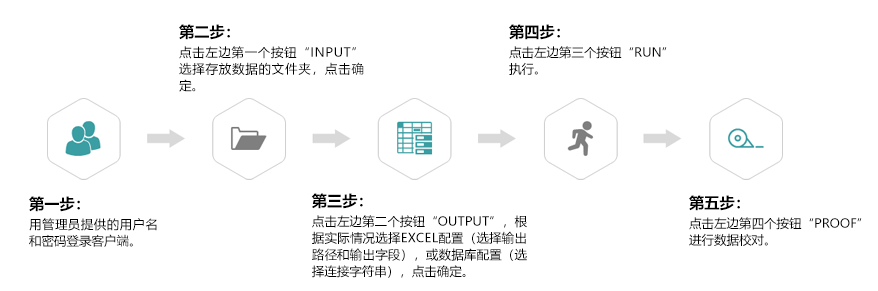
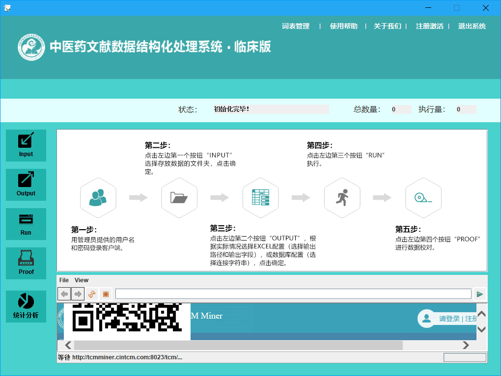
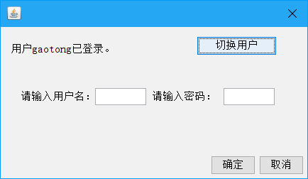
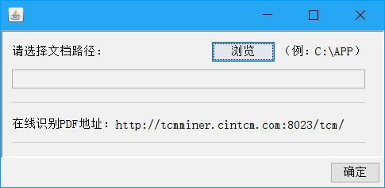
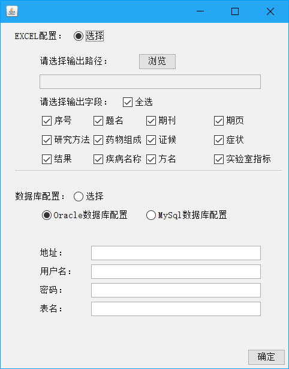
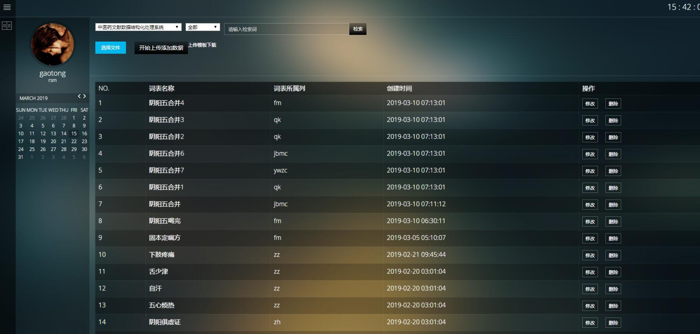

根据中医药知识库构建的迫切需要，本项目基于中医药检索系统数据库资源，研究病症证方药针灸等数据拆分和清洗的关键技术以及书籍、公开数据库、期刊文献等不同数据源的数据采集的关键技术，构建中医药数据资源建设平台，实现从数据加工，数据清洗到数据库、知识库建立的完整流程，为中医药信息化服务。通过创新团队组建模式的研究，培养一支使用信息方法学研究和建设中医药数据的人才队伍。

1.运行程序，进入系统主界面，如下图所示：

2.用户点击右上角“注册激活”，即可弹出激活框，输入用户名和密码，即可激活该系统。

3.用户点击左侧“Input”，即可弹出输入管理框，选择文档路径，点击“确定”即可。

4.用户点击左侧“Output”，即可弹出输出管理框，用户可选择数据库配置或Excel配置。其中选择数据库配置后，还要选择Oracle和Mysql数据库类型，依次输入地址、用户名、密码、表名。其中选择Excel配置后，依次选择输出路径、勾选需要的输出字段，即可输出Excel。

5.点击左侧“Run”按钮，即可执行。
6.点击左侧“Proof”按钮，即可开始校对。
7.点击左侧“统计分析按钮”按钮，即可生成相关统计分析内容。
8.点击上方“词表管理”按钮，即可进入到相关个人词表维护界面。可根据模板维护自己的相关词表内容跟。
